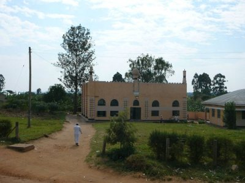

Roadside, East Africa
We spend a lot of time just sitting in the truck, riding
60 km/h along the dusty roads of Africa, sometimes stopping
for lunch, or for a toilet break, or to pick up charcoal,
or souvenirs. The ride is often too bumpy (especially in the back
of the truck) to be able to read or write,
so the only entertainment is looking out of the window.
So, what can be seen on the roadside in Kenya, Tanzania, and Uganda
(Rwanda is already a bit different)?


- Small towns. Nothing more than some garage-like houses (big doors, no windows), most with a certain
function (bar, restaurant (hoteli), hair-dresser, clinic).
Most very colorful, painted with telecom ads (Zain, MTN,
Celtel, Warid, Safaricom, Vodacom, Uganda Telecom, even Orange),
cooking oil ads ("Give your cooking that Midas touch!"), washing powder ads,
Coca-Cola ads ('ve seen only one Pepsi add), etc.
- Small markets, i.e. a row of small produce stands, offering
tomatoes, potatoes, bananas (two kinds: small and sweet vs. green for cooking), onions,
pineapples, honey. Tomatoes, potatoes and other round vegetables are
arranged in pyramid (or conic) shape, for some reason. Also charcoal is often sold on the roadside.
- Fields/plantations: potato, maize, rice, banana, sugarcane, papyrus (in Uganda).
Huge sisal plantations along the Arusha-Dar road.
- Locals aggressively selling snacks, soft drinks, fruits to the truckful
of mzungus. This happens whenever the truck stops in a small town or at the border.
- Small mosques. Approximately every 2nd village has one. All look different but can be easily
recognized by a few shared obligatory features, e.g. a few towers, one of which hosts
a loudspeaker.
- Christian churches. Less interesting than mosques.
- Schools on the hillsides, schoolchildren in uniforms.
- Children, always waving to the truckful of mzungus.
- Domestic animals: goats, donkeys, cows (with extremely long horns in Uganda), sheep, chicken, few dogs.
- Wild animals: very few: 've seen only a zebra, antelope, marabou, crowned crane (in Uganda)
- Brick making. Bricks laid out to dry in the sun, and bricks arranged into an oven
to be burned.
- Drying of crops (e.g. cassava) on big blankets.
- Burned land
- No traffic signs. Speed is regulated by speed bumps. There are lots of those.
- Traffic accidents, usually involving large trucks. ('ve seen at least 5 accidents
during 1 month in East Africa.)
- Often the truck crosses the equator. Sometimes there is a sign on the
roadside to inform about that.